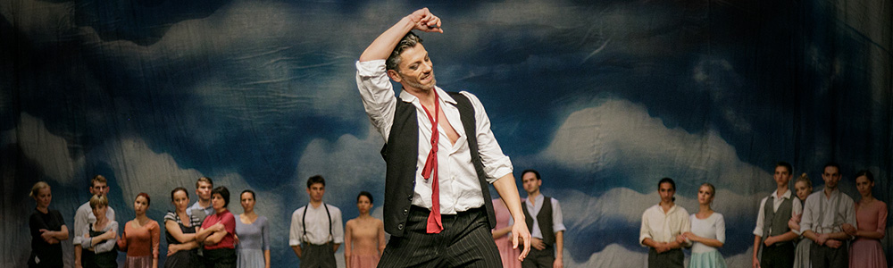

Prijava
Pocetna
Predstave
Srpsko narodno pozorište
Pozorište mladih
Narodno poozorište Niš
Korisnici
Profil

Izmenite detaljan opis:
Алексис Зорбас и Ник, млади писац, срели су се први пут у луци Пиреј. Ник је намеравао да одржи стари запуштени рудник. У ствари, био је то разочаран млад човек који је желео да на острву, међу људима из другачијег света, пронађе свој мир. Зорба је био по свему другачији. Сањар, луталица, волео је живот, пиће, жене – филозофијом човека који је упознао све стране живота носио се са невољама, туђим и својим. Увек је био на страни оних који пате, умео је да се жртвује за друге… Пошто је Зорба радио и рударски посао, Ник га је узео за надзорника радника на Криту. Зорба и Ник крећу заједно на Крит. Тако је све почело. На сеоском тргу, на обали мора, младеж се забавља и плеше. Ту је и млада удовица Марина, која привлачи пажњу мештана. Већина мушкараца тајно чезне за њом, а најжешће Павлос, син богатог пастира, који је лудо заљубљен и љубоморан. Удовица му, пак, ни мало не узвраћа наклоност. Дошљаци Зорба и Ник појављују се на тргу, представљају се мештанима сваки на свој начин. Сусрећу мадам Ортанс, Францускињу, власницу скромног пансиона. Она их прима у свој дом који, код мештана, није на добром гласу. Мадам Ортанс, некадашња париска певачица и играчица, бурне прошлости, сада уморна од свега и болесна, проводи дане на Криту у сећању на минули живот. Зорба и Ник плешу са мадам Ортанс. Привлачност између Зорбе и мадам Ортанс је очигледна. Никову пажњу привлачи случајни сусрет са удовицом Марином која својим понашањем и презиром према обичајима свога краја изазива револт мештана. Мадам Ортанс, очарана сусретом са Зорбом, присећа се своје прошлости, Париза, људи који су је окруживали. У реалност је враћа долазак Зорбе и Ника. Почиње да верује да је коначно срела човека из снова и предаје се Зорби, свим својим бићем и телом… Острвом круже приче о двојици дошљака, али њих те приче не занимају. Између Ника и Зорбе, створено је право и вечно пријатељство. Ник прижељкује нови сусрет са младом удовицом, што мештани примећују и осуђују предвођени несрећно заљубљеним Павлосом. Ник је усамљен и очајан… Зорба храбри Ника да се удвара удовици, а мадам Ортанс, разумевајући удовичин положај, подстиче је да се сусретне с Ником. Узавреле крви, луд од љубоморе, несрећни Павлос буни сељане. Он је спреман на све, али удовица га јавно одбацује показујући свима своју наклоност према Нику. Мештани су озлојеђени јер су дошљаци пореметили њихов мир, обичаје и правила понашања. Мирно острво је узаврело од људских страсти…
Izmenite naziv:
Izmenite zanr:
Drama
Komedija
Tragikomedija
Muzicka parodija
Farsa
Izmenite trajanje:
Izmenite cenu:
Izmenite kod:
Izmenite maks br. osoba:
Login
Register
Login
Korisnicko ime
Lozinka
Login
Close
Register
Korisnick ime
Lozinka
Ime
Prezime
Telefon
Adresa
Datum rodjenja
Gmail
Register
Close
Login
Register
Close